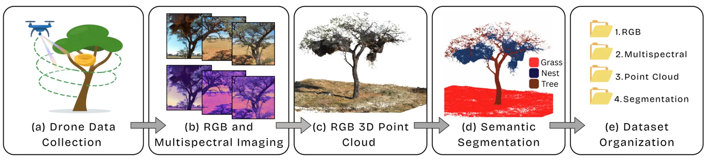
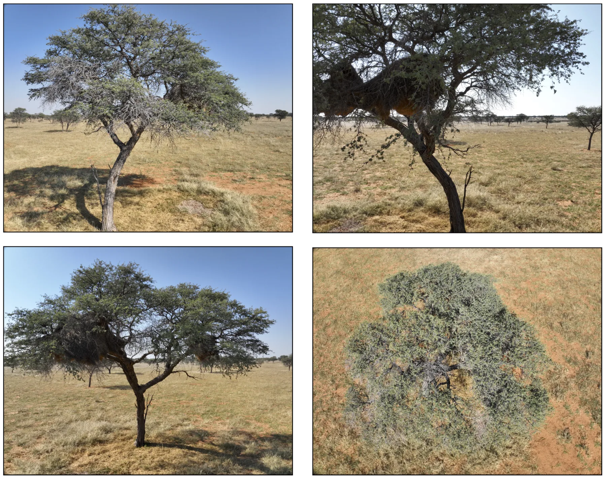
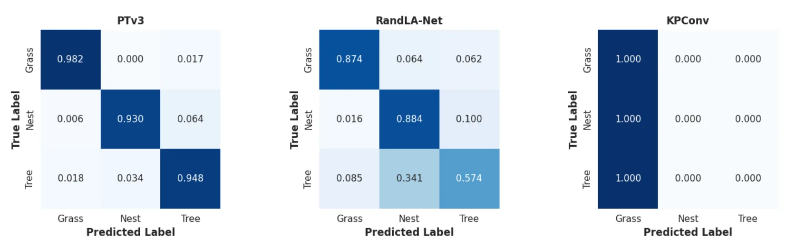
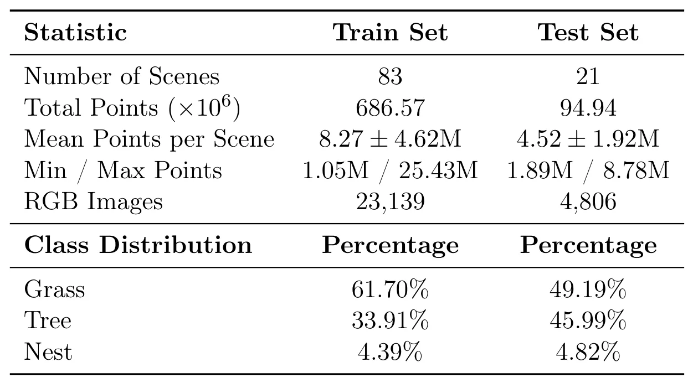
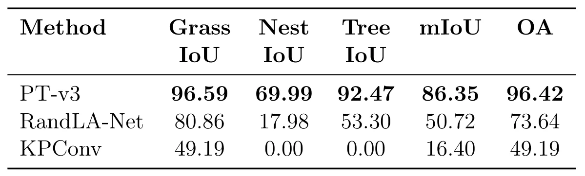

NEST3D：社交织巢鸟树巢的高分辨率多模态数据集NEST3D: A High-Resolution Multimodal Dataset of Sociable Weaver Tree Nests
数据规模和多模态点云标注有价值，适合评估户外非结构化重建/分割；但主题偏生态数据集，与 SLAM/GNSS 定位算法关系间接。
一句话工作总结
NEST3D 发布 1.4 TB 无人机 RGB/多光谱/点云/语义标注数据，可作为复杂植被和不规则结构下的三维重建与点云分割 benchmark。
摘要
社交织巢鸟巢是复杂生态结构，但既有数据集缺乏细粒度三维结构。由于鸟巢几何不规则且与复杂宿主植被融合，生成可用且准确的三维数据十分困难。NEST3D 提供一个开放的 1.4 TB 多模态无人机数据集，覆盖 104 棵带巢树，包含 27,945 张 RGB 图像、111,780 张多光谱图像、约 7.81 亿三维点以及专家标注的语义分割标签。作者用 KPConv、RandLA-Net 和 Point Transformer V3 进行语义分割 benchmark，PT-v3 在测试集上达到 86.35% mIoU。数据集同时结合光谱、空间和结构信息，可推进三维重建、分割和分类算法，并暴露极端类别不平衡下不同架构的性能差异。
Sociable weaver nests function as complex ecological structures offering thermoregulatory microhabitats and sustaining diverse species; however, datasets used in prior studies lack fine-grained 3D structural detail. Producing usable and accurate 3D weaver nest data is challenging due to their irregular geometry and integration with complex host vegetation. We bridge this gap with an open-access, 1.4 TB multimodal drone dataset of 104 nest-bearing trees, comprising 27,945 RGB images, 111,780 multispectral images, approximately 781 million 3D points, and expert-annotated semantic segmentation labels. We benchmark semantic segmentation using KPConv, RandLA-Net, and Point Transformer V3, with PT-v3 achieving an mIoU of 86.35% on the test set. While the results demonstrate strong performance for transformer-based and point-wise methods, they also highlight architecture-dependent challenges, particularly for convolution-based approaches such as KPConv. By uniquely combining spectral, spatial, and structural information, the presented dataset advances 3D reconstruction, segmentation, and classification algorithms, enabling ecological applications from nest volume estimation to species conservation, and serves as a demanding benchmark that exposes architecture-dependent performance under extreme class imbalance.
中文解读摘录
- 链接：abs / PDF；数据集：https://huggingface.co/NEST3D；类别：cs.CV, cs.LG；采集 score=5。
- 核心思路：发布 1.4 TB 无人机多模态数据集，包含 104 棵带巢树、27,945 张 RGB、111,780 张 multispectral images、约 7.81 亿 3D points 和专家语义分割标注。
- 方法要点：用 KPConv、RandLA-Net、Point Transformer V3 做语义分割 benchmark，其中 PT-v3 在 test set 上达到 86.35% mIoU。
- 关注点：对生态场景/复杂植被下的无人机三维重建、点云语义分割和类别极不平衡 benchmark 有价值；与定位/SLAM 关系间接，但可用于评估户外非结构化点云方法。
图表/页面预览
{kind=link}

{kind=link}

{kind=link}

{kind=link}

{kind=link}
